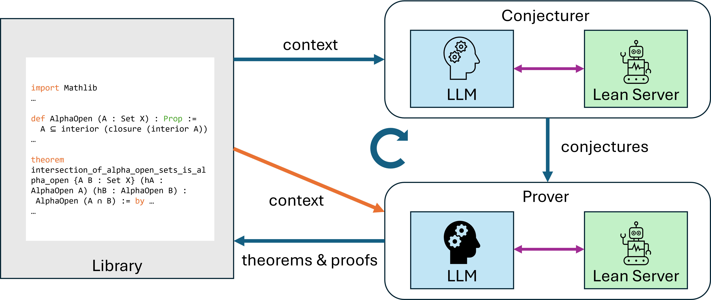
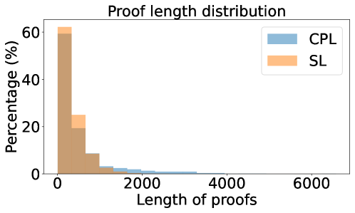

Iteratively generates and proves novel mathematical conjectures in Lean 4 via a Conjecturing-Proving Loop with in-context proof learning.
Abstract
Large Language Models (LLMs) have demonstrated significant promise in formal theorem proving. In this study, we investigate the ability of LLMs to discover novel theorems and produce verified proofs. We propose a pipeline called \textit{Conjecturing-Proving Loop} (CPL), which iteratively generates mathematical conjectures and attempts to prove them in Lean 4. A key feature of CPL is that each iteration conditions the LLM on previously generated theorems and their formal proofs, enabling parameter-free improvement of proof strategies via in-context learning. We provide both theoretical and experimental evidence that CPL increases the discovery rate of hard-to-prove theorems compared to frameworks that generate statements and proofs simultaneously. Moreover, our experiments show that reusing the LLM's own formally verified outputs as context consistently improves subsequent proof success, demonstrating the effectiveness of self-generated in-context learning for neural theorem proving. The source code is available at https://github.com/auto-res/ConjecturingProvingLoop.
Problem
LLMs can prove theorems in formal systems, but their ability to discover novel theorems and produce verified proofs with improving performance over iterations was not well understood. Existing approaches that generate statements and proofs simultaneously tend to converge on easy, short proofs.
Approach
The Conjecturing-Proving Loop (CPL) iteratively generates mathematical conjectures and attempts to prove them in Lean 4. Each iteration conditions the LLM on previously generated theorems and their formal proofs, enabling parameter-free improvement via in-context learning. Separating conjecturing from proving employs stratified sampling that allocates search resources according to proof difficulty.

Figure 1: Overview of Conjecturing-Proving Loop. Conjecturer generates conjectures using the library as context, Prover attempts to prove them, and proven conjectures and their proofs are stored in the library as theorems. The library also provides context to Prover. Both Conjecturer and Prover processes consist of interactions between LLMs and Lean Server.
Results
CPL increases the discovery rate of hard-to-prove theorems compared to frameworks that generate statements and proofs simultaneously. Reusing the LLM's own formally verified outputs as context consistently improves subsequent proof success. The distribution of proof lengths shifts toward longer, harder proofs compared to a simple loop baseline.

Figure 2: Distribution of proof lengths (the numbers of characters) of theorems generated by our framework and the simple loop framework.